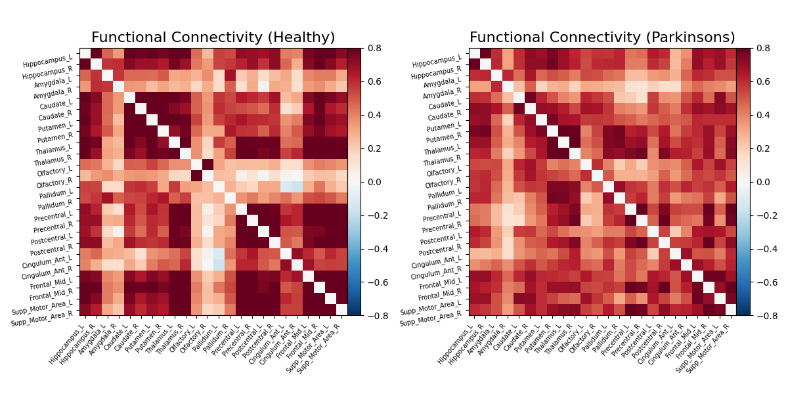
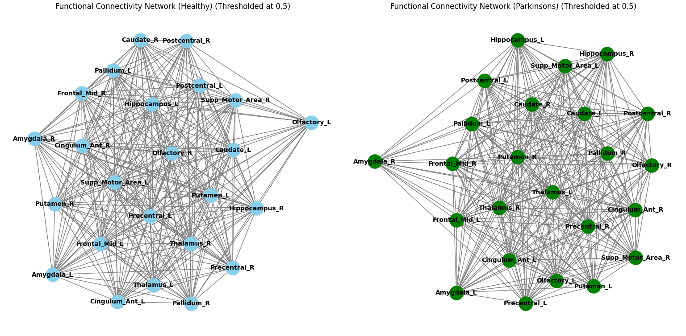
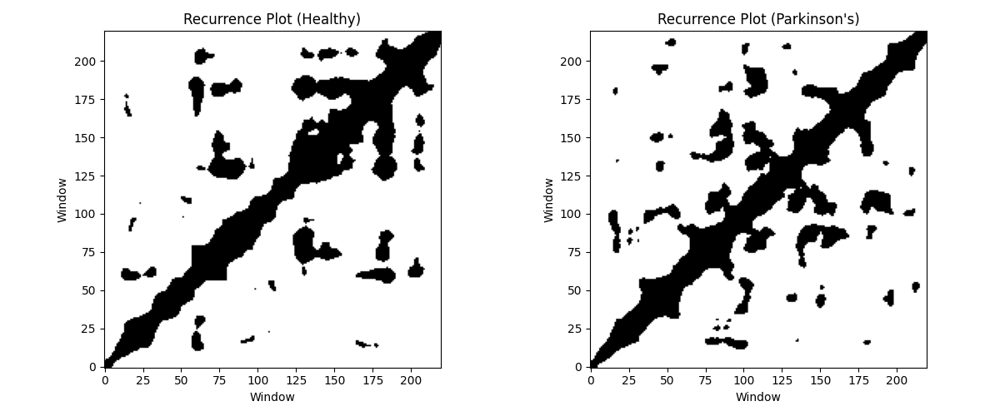
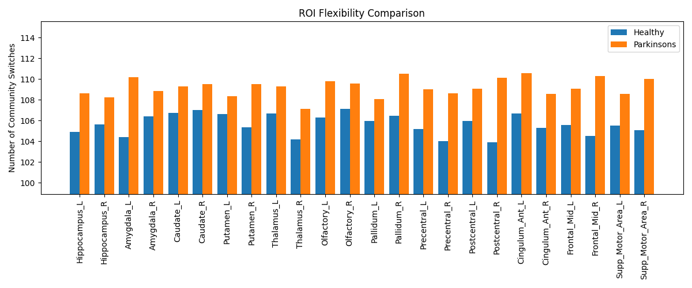
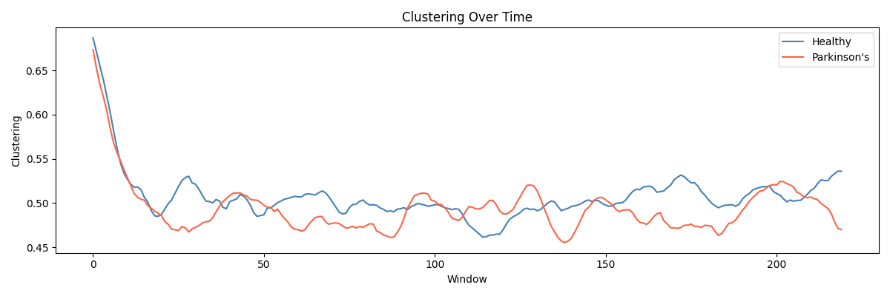
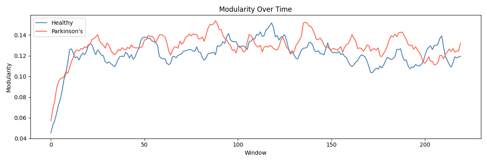

Built a full computational pipeline to analyze resting-state fMRI data as a dynamic functional network, characterizing time-varying connectivity, graph-theoretic properties, and neural flexibility differences between healthy controls and Parkinson's disease patients.
This project was a group work, undertaken as our third year mini-project, under the guidance of Dr. Sminu Izudheen.






Traditional fMRI connectivity analyses treat brain connectivity as static, i.e, a single average over the entire scan. But brain networks are inherently dynamic. This project asks: how do the temporal dynamics of large-scale functional brain networks differ between healthy individuals and those with Parkinson's disease, and what do nonlinear measures like recurrence plots reveal that static analyses miss?
Resting-state fMRI data from 20 healthy controls and 20 Parkinson's patients (Tao Wu dataset) were processed using Nilearn. BOLD timeseries were extracted from 24 Parkinson's-disease-relevant ROIs defined by the AAL atlas, spanning the hippocampus, amygdala, basal ganglia (caudate, putamen, pallidum), thalamus, motor cortex (precentral, postcentral, SMA), anterior cingulate, and middle frontal gyrus, regions known to be implicated in PD pathophysiology.
The pipeline comprised two analysis streams: